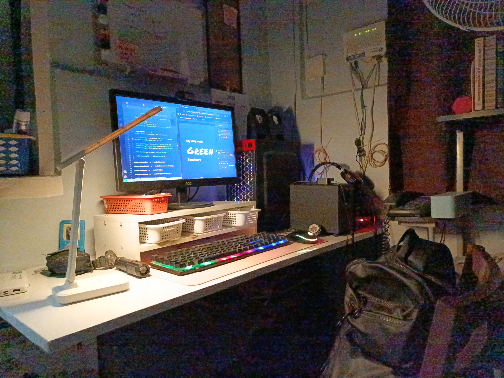
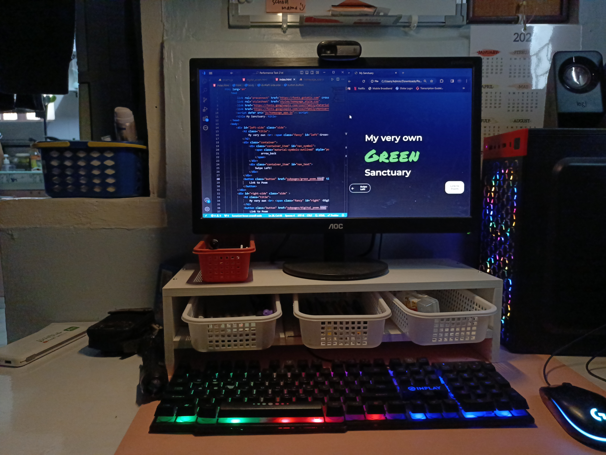

Here lies my world of thought,
Where countless of my battles are fought,
Where sleepless nights I've spent toiling,
And where I've found my calling.
This is my isolated world,
A world where I remain undisturbed,
A world where "others" does not exist,
The world where I continue to persist.
It is clean and orderly,
Yet it is where situations get messy,
It is the place that ideas came to be.
It is the place where I found what's meant for me,
A place filled with glee,
A place where I would flee,
Where I can be me for as far as I can see,
A place where I've fallen to many.
Yet it is a place I treat so dearly
This place is,